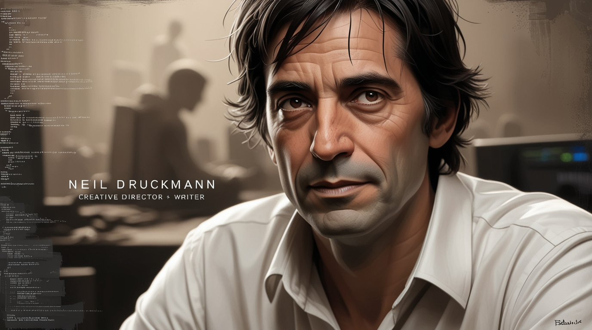

Biografia do Autor
Neil Druckmann é diretor de criação, roteirista e programador de jogos eletrônicos. Ele nasceu em Tel Aviv, Israel, e se mudou com a família para os Estados Unidos quando adolescente. Neil começou a trabalhar na Naughty Dog como estagiário em 2004
Druckmann entrou na Naughty Dog inicialmente como um estagiário. Ele tornou-se programador em 2004, trabalhando em Jak 3 e Jak X: Combat Racing, em seguida atuando como projetista de jogo para Uncharted: Drake's Fortune e Uncharted 2: Among Thieves. Druckmann foi depois disso escolhido para trabalhar como diretor de criação e roteirista de The Last of Us, mantendo os cargos em Uncharted 4: A Thief's End e The Last of Us Part II. Além de seus trabalhos em jogos, ele também participou da produção dos quadrinhos Uncharted: Eye of Indra, A Second Chance at Sarah e The Last of Us: American Dreams.

Druckmann já foi muito elogiado por trabalho como roteirista de The Last of Us, recebendo indicações e vários prêmios por suas contribuições, incluindo um Prêmio DICE, dois Prêmios de Jogos da Academia Britânica e dois Prêmios do Sindicato dos Roteiristas. Seu trabalho em A Thief's End também foi bem recedido, com ele vencendo um prêmio do The Game Awards.
Todos diretos reservados